Giáng Sinh Vui Vẽ
Trí nhớ của tôi nó rất ngắn hạn có những thứ tôi không thể nhớ đc tuy mới xẩy ra gần đây đó cũng là điểm mạnh cũng là điểm yếu. tuy vậy luôn nhớ về em do ăn nói không đc hay ho hay giỏi gian gì về cái này do ít nói những thứ tcam như này nhưng gặp em tôi dần dần trở nên mạnh dạng hơn có thể nói những từ ngữ thể hiện tcam của mik, và cũng ít nói chuyện với con gái nên hơi còn rụt rè khi gặp ở ngoài nói chuyện với em. Do đó những lúc nói chuyện kểu những hơi bị lag á hehe nghe lỏ vãi. Những gặp em thì nghe em kể chuyện các thứ rất vui khi nghe đc những lời nói đó tại thương những người mà đc nghe kể thương là những người rất quan trọng Nên mới đc nghe như vậy tui chỉ giỏi nghe thôi còn diễn đạt hơi lỏ. lúc đầu khi nói chuyện tôi cung không có tính tới lúc như này vì thấy nhắn tin hời hợt cũng như tôi. Những sau này lại nhắn nhiều và tôi khá thích cách nói chuyện và chia sẽ bùn vui với tôi. Là người con gái tôi thấy có trách nhiệm vô cùng điều làm mọi việc rất tốt và giỏi gian tôi không nghĩ mik có thể làm quen đc người như vậy rất là hoàn hảo hầu hết mọi mặt. là người tôt thấy rất ngưỡng mộ nên tôi phải cố học để giỏi như vậy 1 phần nào. Những có những lúc tôi cảm thấy còn trẻ con không đc trưởng thành lắm làm những điều mà mình thích không nghĩ quá nhiều và cũng không có tiền tài không đc giỏi gian hay tốt đẹp gì mấy để có thể mạnh dạng nói làm quen em nhưng em đã đưa ra nhiều câu nói khiến anh mạnh dạng hơn Những việc làm “rõ ràng” vì vậy em có đồng ý làm bạn gái anh không.
Đây tuy không được đẹp hay mong em thấy thấy vui.

 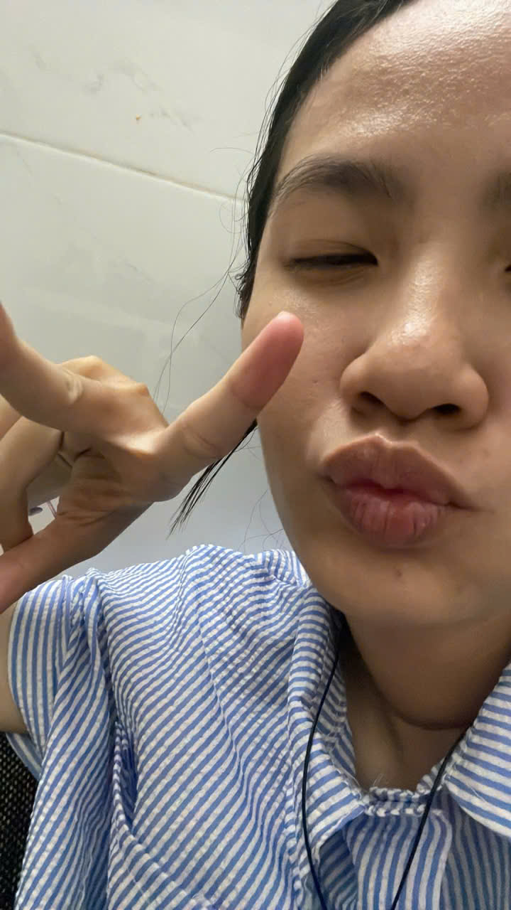
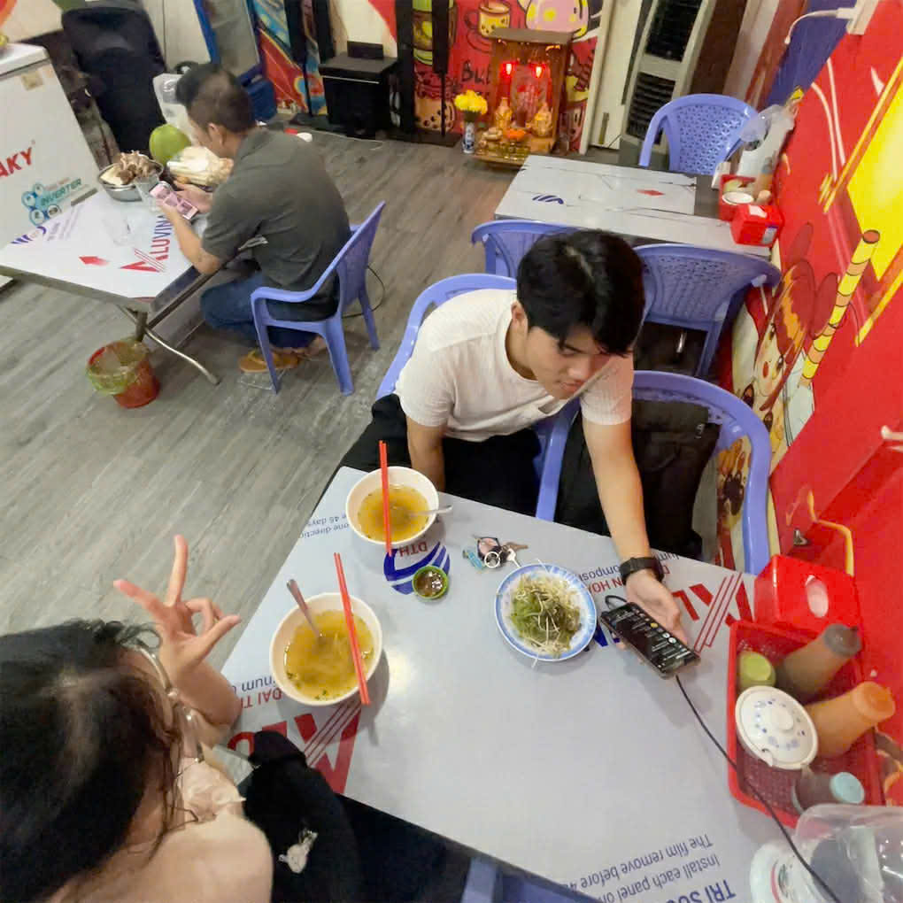
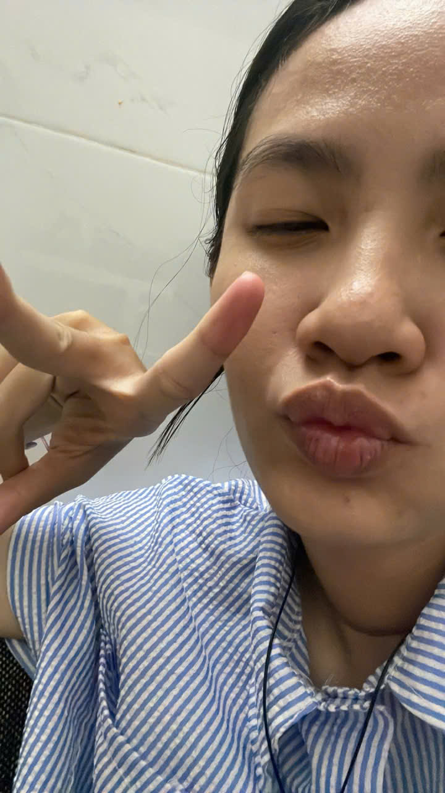
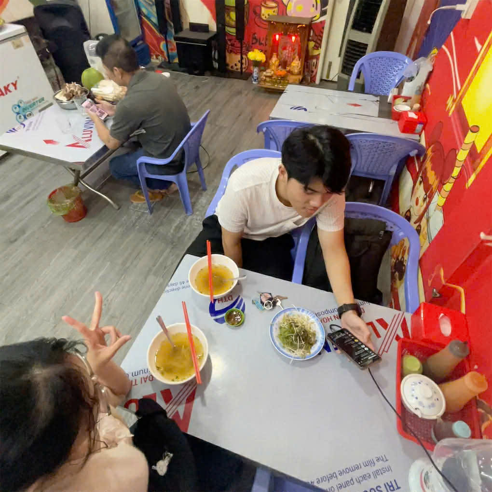

 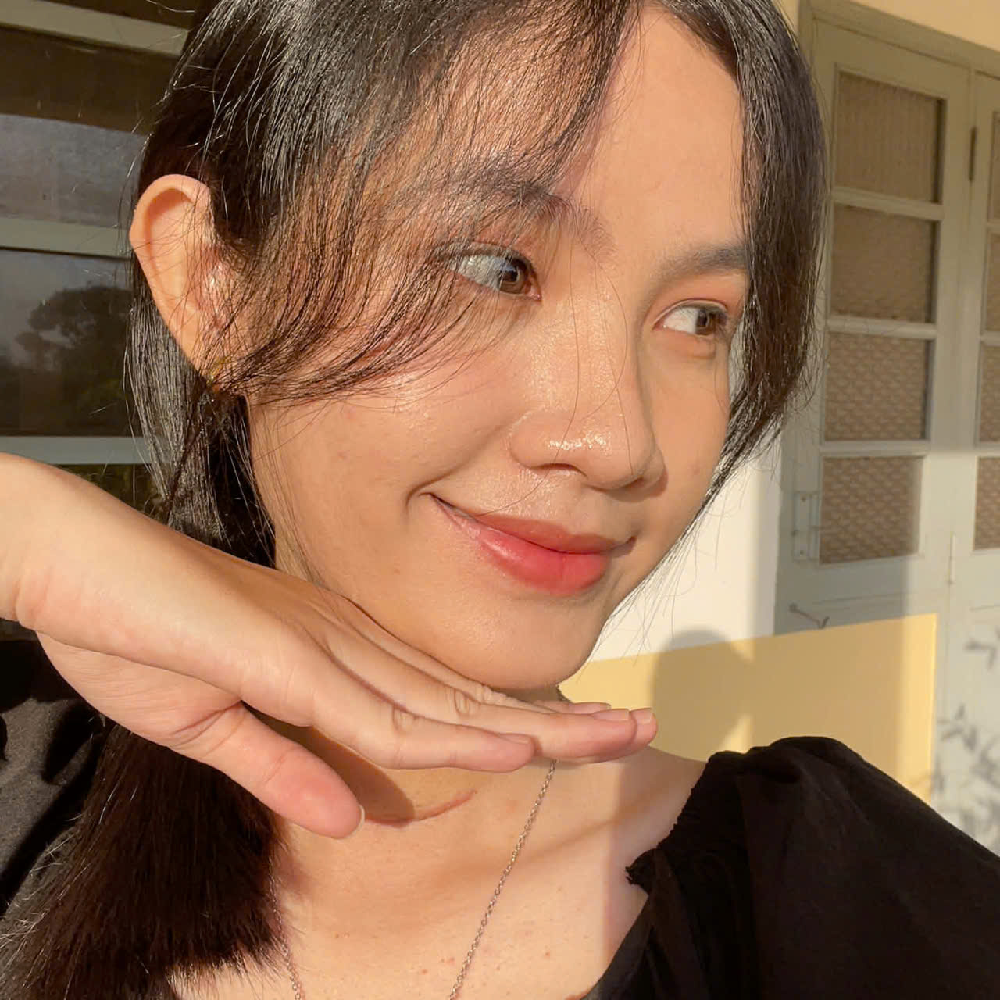
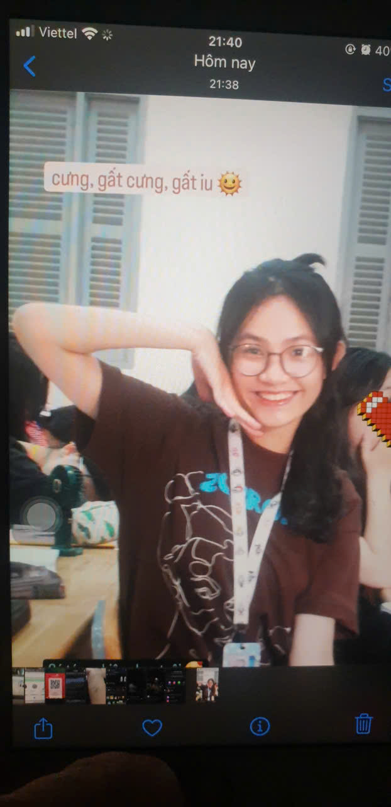
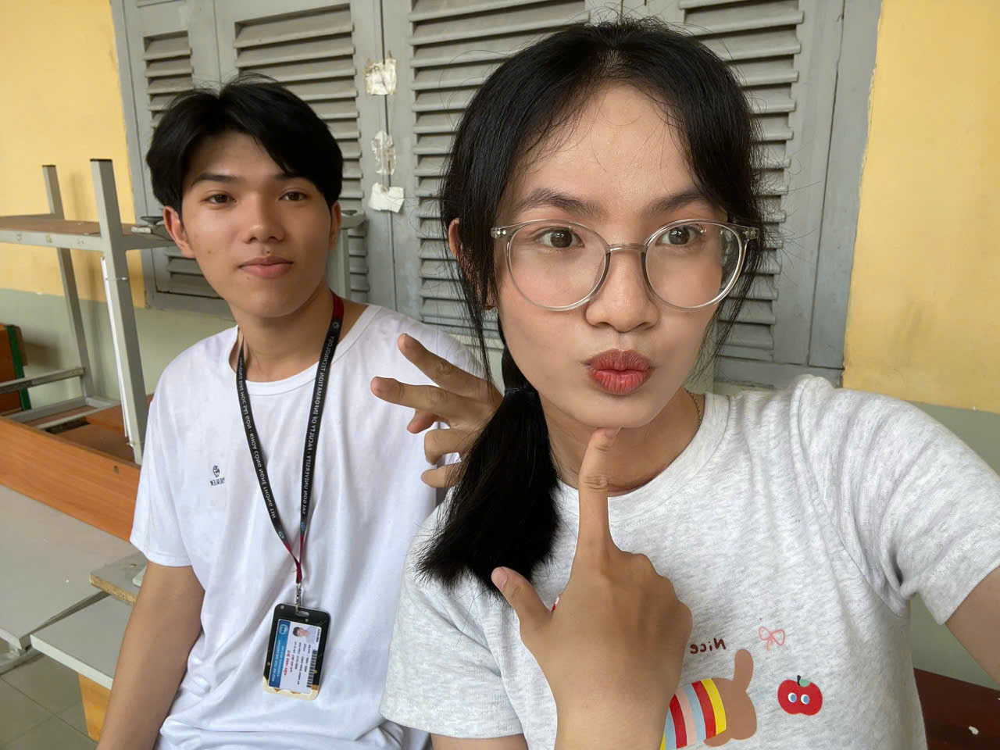
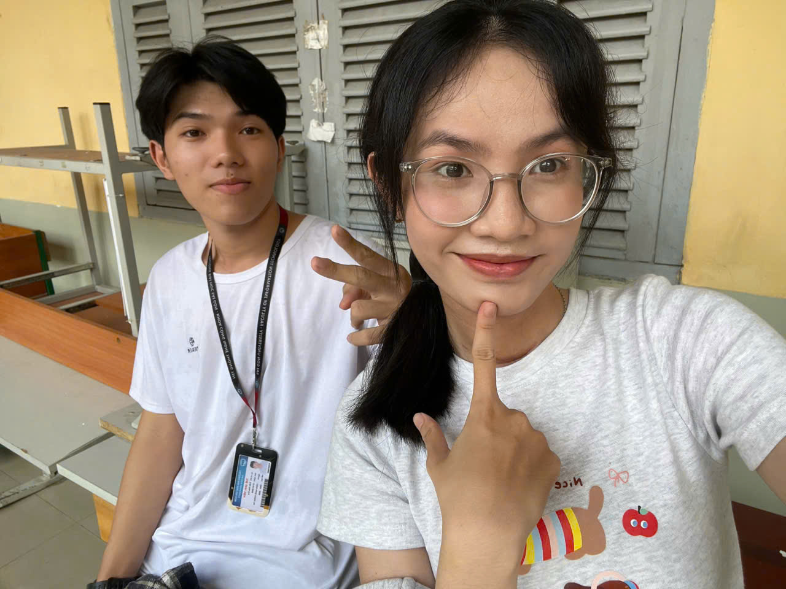
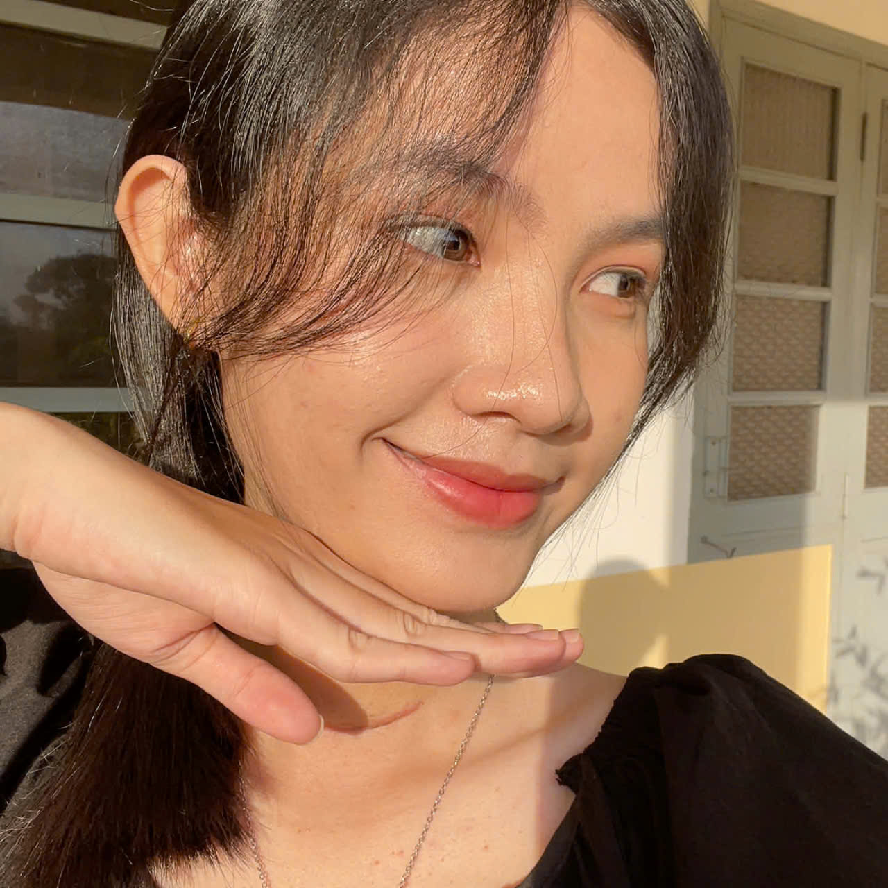
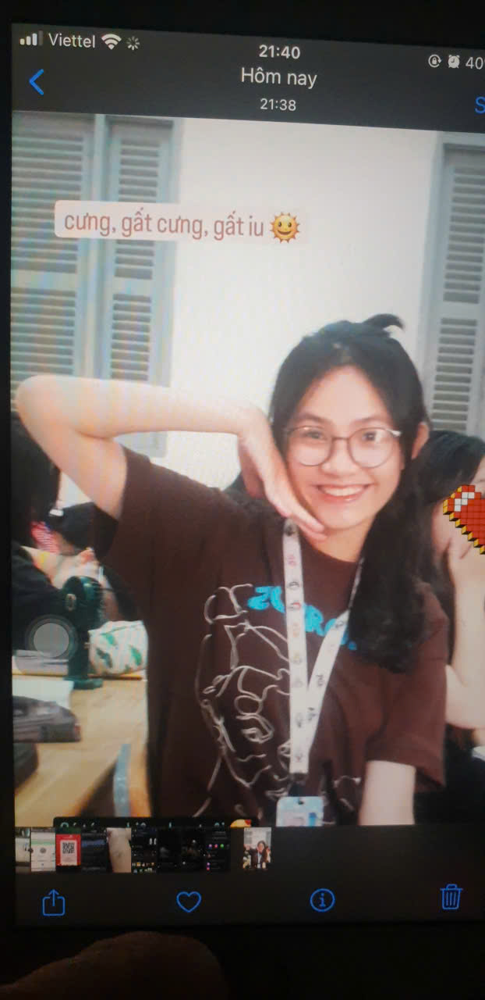
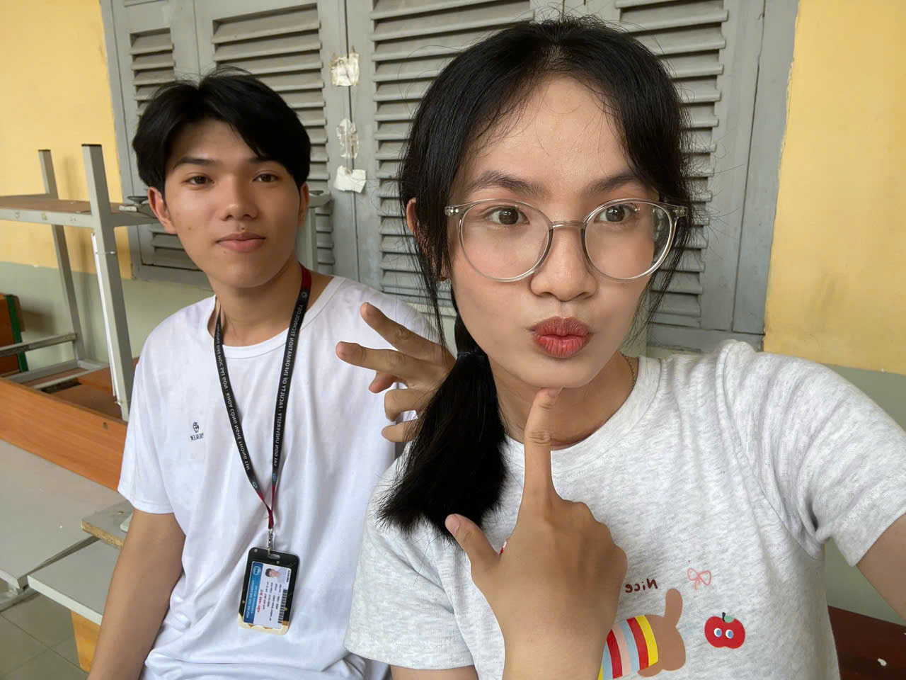
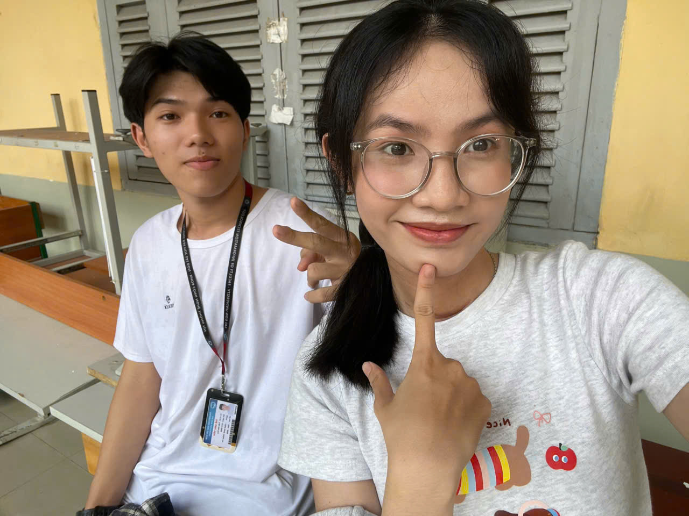